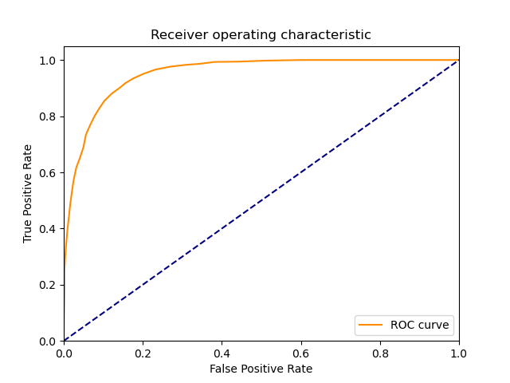
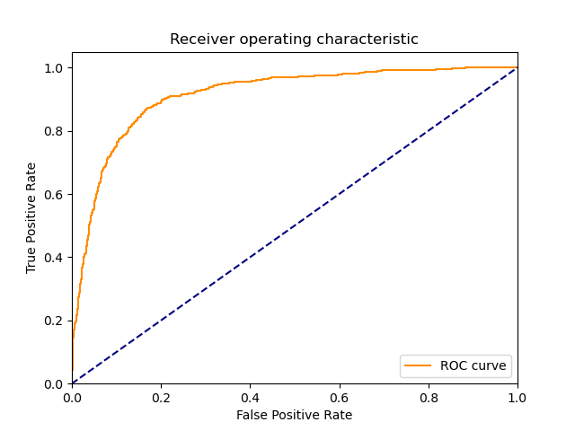

| 4 |
KNeighborsClassifier |
Classifier implementing the k-nearest neighbors vote |
0.668869 |
49.401861 |
671 |
1634 |
116 |
204 |
0.766857 |
0.933714 |
0.852605 |
0.878095 |
0.121905 |
0.807461 |
1.567170 |
1.207204 |
0.016345 |
|
|
 |
| 1 |
RealBoost |
An RealBoost classifier |
12027.500432 |
0.343685 |
661 |
1624 |
126 |
214 |
0.755429 |
0.928000 |
0.839898 |
0.870476 |
0.129524 |
0.795427 |
1.509153 |
0.000066 |
2.314410 |
|
|
|
| 5 |
LinearSVM |
Linear Support Vector Classification |
3801.844474 |
2.415669 |
766 |
1435 |
315 |
109 |
0.875429 |
0.820000 |
0.708603 |
0.838476 |
0.161524 |
0.783231 |
1.334970 |
0.000206 |
0.324230 |
|
|
 |
| 0 |
DiscreteNBC |
DiscreteNBC |
3468.427319 |
1926.254125 |
727 |
1410 |
340 |
148 |
0.830857 |
0.805714 |
0.681350 |
0.814095 |
0.185905 |
0.748713 |
1.225468 |
0.000216 |
0.000389 |
|
|
|
| 3 |
GaussianNBC |
Gaussian Naive Bayes (GaussianNB) |
35.872845 |
17.065825 |
703 |
1228 |
522 |
172 |
0.803429 |
0.701714 |
0.573878 |
0.735619 |
0.264381 |
0.669524 |
0.994468 |
0.018664 |
0.039232 |
|
|
|
| 2 |
BernoulliNBC |
Naive Bayes classifier for multivariate Bernoulli models |
75.860487 |
5.229188 |
704 |
1157 |
593 |
171 |
0.804571 |
0.661143 |
0.542791 |
0.708952 |
0.291048 |
0.648250 |
0.939457 |
0.008545 |
0.123968 |
|
 |
|
{kind=link}
{kind=link}
{kind=link}
{kind=link}
{kind=link}
{kind=link}
{kind=link}
{kind=link}
{kind=link}
{kind=link}
{kind=link}
{kind=link}
{kind=link}
{kind=link}
{kind=link}
{kind=link}
{kind=link}